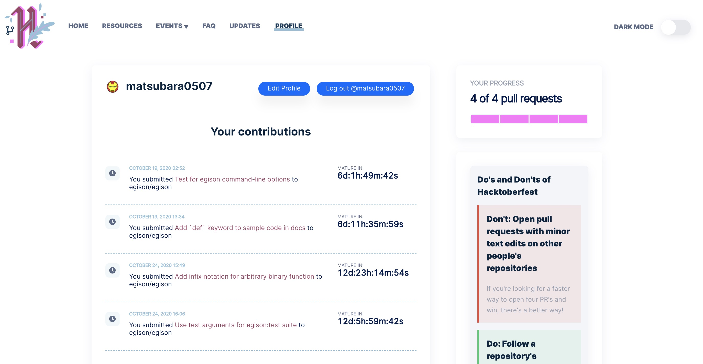

Hacktoberfest 2020 なので PR を4つ出してみた
Hacktoberfest 2020 がきたので今年もPRを出してきました．

Hacktoberfest 2020
例年と異なり，PR のカウントの仕方が（途中から）変わった． もともとは Public なリポジトリに対する PR ならなんでもよかったが，途中から次のいずれかのみカウントされるようになった：
hacktoberfesttopic のついた Public リポジトリに対する PR で，Approve か Merge されたもの- Public リポジトリの PR で
hacktoberfest-acceptedラベルがついたもの
普段使っているパッケージのリポジトリなどには軒並み hacktoberfest topic がついていなかったので，ついてるリポジトリを1つ選んで献上しようかなと考えた． hacktoberfest topic と Haskell で検索したところ，昔から興味のあった Egison 言語にも hacktoberfest topic がついていたので，これにコミットすることにした．
Egison
Egison はパターンマッチ指向プログラミング言語というもので，他のプログラミング言語とは比べ物にならないほど強力なパターンマッチ機能を持っている：
-- 素数の無限リストから全ての双子素数をパターンマッチにより抽出
def twinPrimes :=
matchAll primes as list integer with
| _ ++ $p :: #(p + 2) :: _ -> (p, p + 2)
-- 最初の5個の双子素数を列挙
take 5 twinPrimes
-- => [(3, 5), (5, 7), (11, 13), (17, 19), (29, 31)]これは Egison の公式サイトに載っている例だ． 素数の無限リスト primes 自体は標準パッケージに（なぜか）入っているものだ． 双子素数は差が 2 しかない素数の組である．
最近だと数式処理などにも力を入れているようだ．
出した PR
1. コマンドオプションのテスト
これは good first issue としてすでにあったやつだ．
どうしようかなと考えた結果 readProcess を使うことにした． stack exec -- egison をこの関数で実行して，その出力が意図通りかをテストする：
import Test.Framework (defaultMain)
import Test.Framework.Providers.HUnit (hUnitTestToTests)
import Test.HUnit
import System.Process (readProcess)
main = defaultMain . hUnitTestToTests . test $ TestList
[ TestLabel "eval option" . TestCase $ assertEgisonCmd
"[[], [1], [1, 2], [1, 2, 3]]\n"
["--eval", "matchAll [1,2,3] as list something with $x ++ _ -> x"]
""
]
assertEgisonCmd
:: String -- The expected value
-> [String] -- any arguments for egison command
-> String -- standard input for egison command
-> Assertion
assertEgisonCmd expected args input = do
actual <- readProcess "stack" ("exec" : "--" : "egison" : args) input
assertEqual "" expected actualこういうことをやってくれるライブラリもあるかもしれないが，あまり依存パッケージを増やすのも嫌だったので既に使われてるパッケージで実現できる方法にした． ちなみに，egison コマンドは --eval オプションなどを使わない場合はREPLが起動する：
$ stack exec -- egison
Egison Version 4.1.1
https://www.egison.org
Welcome to Egison Interpreter!
> 1 + 1
2
>
Leaving Egison Interpreter.readProcess は標準入力も与えることができるので，これを使ってREPLを介したテストも可能だ：
import Data.Version (showVersion)
import Language.Egison (version)
...
[ TestLabel "load-file option" . TestCase $ assertEgisonCmd
(interpreter "1\n")
["--load-file", "test/fixture/a.egi"]
"x"
]
interpreter :: String -> String
interpreter output = concat
[ "Egison Version ", showVersion version, "\n"
, "https://www.egison.org\n"
, "Welcome to Egison Interpreter!\n"
, "> ", output
, "> Leaving Egison Interpreter.\n"
]2. ドキュメントの修正（def キーワードの追加）
コマンドオプションのテストケースは Issue にあったドキュメントを参考に実装した． そのドキュメントの通りに実装したらコンパイルエラーになった：
$ stack exec -- egison -l test/fixture/name-of-file-to-load.egi
Parse error at: egison:1:3:
|
1 | x := 1
| ^
unexpected ':'
expecting "...", "where", atomic expression, end of input, index, or infixこれは，Egison のバージョン4.1.0から変わった記法で，変数や関数定義のときに def キーワードが必要になったのだ． コマンドオプションのテスト追加PRで「ついでにこのPRでドキュメントも修正しますか？それとも別で出した方が良いですか？」と聞いたところ「余力があるならぜひ別で良いので出してください」と返って来たので別PRで出した次第．
3. 中置関数の導入
Haskell に関数の中置記法がある． 任意の関数に対して，バッククォートで囲ってあげることで二項演算子のように使うことができる：
add :: Int -> Int -> Int
add x y = x + y
main = print $ 1 `add` 2 -- => display `3`これを Egison にも導入して欲しいという Issue が既にあった：
他の出したPRと異なりガッツリ処理系をいじる必要がある． 言わずもがな，一番難しかった．
Issue には注意点として，右に閉じバッククォートがない場合は QuoteSymbolExpr となると書いてあった（おそらくLispのマクロ由来の逆クォート）． 試しに，現状の Egison で中置関数を記述してみると：
$ stack exec -- egison
Egison Version 4.1.1
https://www.egison.org
Welcome to Egison Interpreter!
> 1 + 2
3
> def add x y := x + y
> add 1 2
3
> 1 `add` 2
Parse error at: egison:1:8:
|
1 | 1 `add` 2
| ^^
unexpected " 2"
expecting atomic expressionもちろんダメだった．
演算子のパーサーはどこか
Egison はパーサーに megaparsec を利用しており，演算子のパーサーは次のようになっている：
type Parser = ParsecT CustomError String RuntimeM
opExpr :: Parser Expr
opExpr = do
ops <- gets exprOps
makeExprParser exprInOp (makeExprTable ops)
exprInOp :: Parser Expr
exprInOp = ...
makeExprTable :: [Op] -> [[Operator Parser Expr]]
makeExprTable ops =
map (map toOperator) (groupBy (\x y -> priority x == priority y) ops)
where
-- 実装は割愛
unary :: String -> Parser (Expr -> Expr)
binary :: Op -> Parser (Expr -> Expr -> Expr)
toOperator :: Op -> Operator Parser ExprmakeExprParser は megaparsec（が依存している parser-combinators パッケージ）の関数である．
makeExprParser
:: MonadPlus m
=> m a -- 二項演算子の引数に当たる部分のパーサー
-> [[Operator m a]] -- 演算子のパーサーのテーブル
-> m a2引数目の [[Operator m a]] が今回のキモだ． Operator m a は演算子のパーサーで，[[Operator m a]] は演算子の優先順位（priority）の高い順に Operator m a のリストが並んでいる． gets exprOps は Parser が保持している演算子（Op 型）の集合を返している（ReaderT で保持している）：
data Op
= Op { repr :: String -- representation
, priority :: Int
, assoc :: Assoc
, isWedge :: Bool -- これはよくわからない
}
deriving (Eq, Ord, Show)
data Assoc
= InfixL
| InfixR
| InfixN
| Prefix
deriving (Eq, Ord)そして，makeExprTable はこの演算子のリストをもらって，makeExprParser 関数に渡すための演算子パーサー群を生成するための関数だ．
中置関数のパーサーを作る
最初は愚直に，関数定義のたびに演算子（Op 型）を生成して，Parser にセットしてあげれば良いかなと雑に考えていたが、これを網羅的にやるのはめんどくさいコトに気づいた． makeExprTable では演算子（Op 型）と演算子パーサーが一対一対応するように作っているが，よく考えたら Operator m a 型はただのパーサーなのでもっと自由に書けるはずだということに気づいた． ということで，中置関数を追加するために makeExprTable へ新しい中治関数用の演算子パーサーを追加することにした：
makeExprTable :: [Op] -> [[Operator Parser Expr]]
makeExprTable ops =
reverse $ map (map snd) $ groupBy ((==) `on` fst) $ sortOn fst $
(infixFuncOpPriority, infixFuncOperator) : map (\op -> (priority op, toOperator op)) ops
where
-- 実装は割愛
unary :: String -> Parser (Expr -> Expr)
binary :: Op -> Parser (Expr -> Expr -> Expr)
toOperator :: Op -> Operator Parser Expr
infixFuncOperator :: Operator Parser Expr
infixFuncOperator = InfixL $ InfixExpr <$> infixFuncOp
infixFuncOp :: Parser Op
infixFuncOp = do
func <- try (indented >> between (symbol "`") (symbol "`") ident)
return $ Op { repr = func, priority = infixFuncOpPriority, assoc = E.InfixL, isWedge = False }
infixFuncOpPriority :: Int
infixFuncOpPriority = 7優先順位をいい感じに組み立てるために，少しわかりにくい実装をしているが，順に読んでいけばわかるはずだ：
map (\op -> (priority op, toOperator op)) ops -- [(優先順位 (Int), Op から生成した演算子パーサー)]
& ((infixFuncOpPriority, infixFuncOperator) :) -- 中置関数の演算子パーサーを追加
& sortOn fst -- 優先順位でソート (groupBy するため)
& groupBy ((==) `on` fst) -- 優先順位でグループ化 ([[(優先順位, 演算子パーサー)]])
& map (map snd) -- 演算子パーサーだけ取り出す ([[演算子パーサー]])
& reverse -- 優先順位の低い順になっているので反転 中置関数のパーサーはシンプルでバッククォートで囲まれた識別子（ident）をとってきているだけだ（ident は変数のパーサーなどで使われている）． symbol を使っているのでバッククォート前後にスペースがあっても動作する． これは Haskell がそうなっていたのでそうしたが，QuoteSymbolExpr のある Egison ではやめた方がいいかもしれない：
ghci> 13 `mod` 10 :: Int
3
ghci> 13`mod`10 :: Int
3
ghci> 13` mod `10 :: Int
3
ghci> 13` mod `10 :: Int
3QuoteSymbolExpr の対応
あとは，注意点にあった QuoteSymbolExpr の部分をなんとかするだけだ：
-- Atomic expressions without index
atomExpr' :: Parser Expr
atomExpr' = anonParamFuncExpr
<|> ConstantExpr <$> constantExpr
<|> FreshVarExpr <$ symbol "#"
<|> VarExpr <$> ident
<|> vectorExpr
<|> collectionExpr
<|> tupleOrParenExpr
<|> hashExpr
<|> QuoteExpr <$> (char '\'' >> atomExpr')
-- 元々 <|> QuoteSymbolExpr <$> (char '`' >> atomExpr')
<|> QuoteSymbolExpr <$> try (char '`' >> atomExpr' <* notFollowedBy (char '`'))
<|> AnonParamExpr <$> try (char '%' >> positiveIntegerLiteral)
<?> "atomic expression"notFollowedBy 関数を使って後ろにバッククォートがないかをチェックしている（try を付けないとパーサーが入力を消費してしまう）．
セクション記法
実はもう1つやることがある． セクション記法に対応する必要がある（(+ 1) とか (1 +)って感じのやつ）． セクション記法のパーサーはそれぞれ leftSection と rightSection があるので，これに infixFuncOp を追記してあげるだけだ：
leftSection :: Parser Expr
leftSection = do
ops <- gets exprOps
op <- choice $ map (infixLiteral . repr) ops
op <- choice $ infixFuncOp : map (infixLiteral . repr) ops -- この (infixFuncOp :)
rarg <- optional expr
case rarg of
_ -> return (SectionExpr op Nothing rarg)あとはよしなにテストを追加して完成．
4. テストの個別実行を可能にする
中置関数の導入で実際は，先にテストを追加して TDD っぽく実装をしていた． その際に，stack test で全部のテストが実行されると非常に遅いのでテストケースを適当に指定して実行したい． ということで，そういうことができるようにした PR が最後のやつだ．
stack test は --test-arguments オプションで実行されるテストプログラムにコマンドライン引数を渡すことができる． さらに，テストで使われている test-framework では defaultMainWithArgs を使うことで簡単にリッチなオプションを追加できる：
import Test.Framework (defaultMain)
import Test.Framework (defaultMainWithArgs)
import Test.Framework.Providers.HUnit (hUnitTestToTests)
import Test.HUnit
main :: IO ()
main = do
args <- getArgs
flip defaultMainWithArgs args $
hUnitTestToTests $ test $ map runTestCase testCases
testCases :: [FilePath]
testCases = ...
runTestCase :: FilePath -> Test
runTestCase = ...こんなふうに実行できる（ちなみに，--ta=--help とすれば色々見れる）：
$ stack test egison:test --ta=--select-tests="test/syntax.egi"
egison> test (suite: test, args: --select-tests=test/syntax.egi)
io and do expression
io and do expression without newline
:test/syntax.egi: [OK]
Test Cases Total
Passed 1 1
Failed 0 0
Total 1 1 egison:test の部分は Cabal ファイルに複数の Test-Suite が書いてある場合に指定することができる（Egison にはCLIオプションの Test-Suite が増えているので）．
おしまい
今年の Hacktoberfest はちょっと炎上（このイベントをクリアするためにスパムなPRが乱立した）してて，最初はモチベーション下がっていました。 しかし，こういう時こそ正しい形で参加するのは Hacktoberfest 側にとって喜ばしいことかなと思い参加することにしました． 無事OSSに献上できてよかったです（レビューしてくれた方ありがとうございます）．